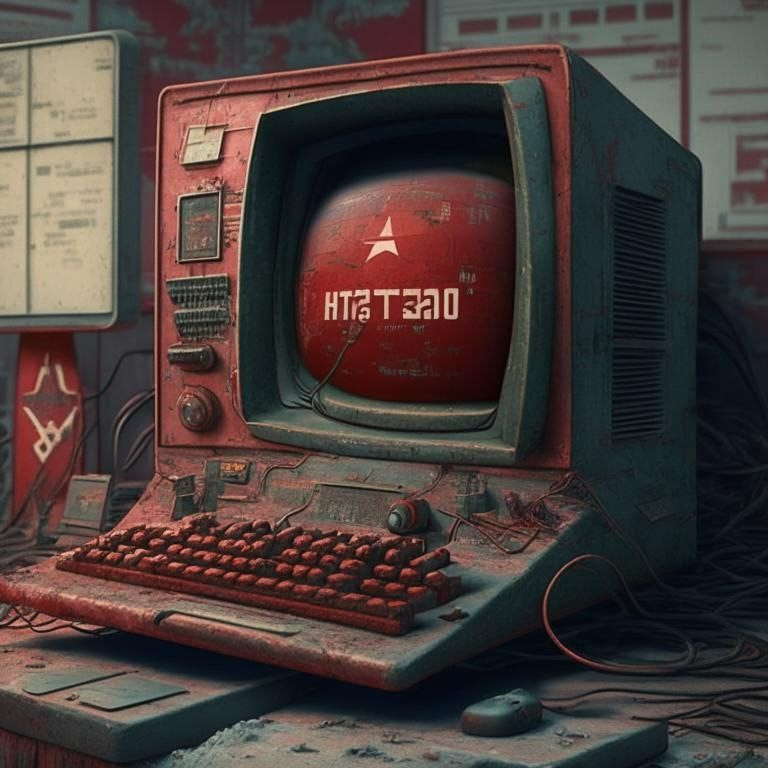
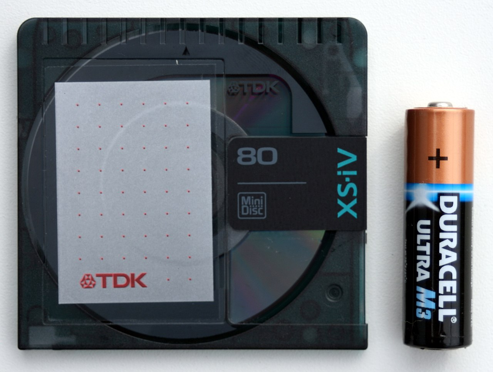

Плановая экономика или три истории
Из уст российских законодателей можно в последнее время часто услышать, о необходимости возвращения к плановой системе экономики. Сегодня я на примере трех историй попробую объяснить, почему это не сработает.
История 1-я “Советский интернет”
Вы никогда не задумывались о том, почему в СССР не появилось своего собственного аналога интернета, хотя все наработки и ресурсы для этого были? На самом деле, попытка создать нечто подобное была в 70-е годы прошлого века. В Госплане была идея создать общую статистическую базу для всех предприятий, чтобы проще было проводить аналитику и планирование, мысль казалось бы здравая, но на пути реализации все это уткнулось в стену плановой экономики. Дело в том, что когда создавался американский интернет - он создавался по принципу открытых данных, то есть разные институты и учреждения - готовы были открыть свои данные и остальные могли этими данными пользоваться, но в Советском союзе такой подход был не выгоден прежде всего руководителям предприятий, так как в плановой системе - руководитель мог сам колдовать со всей нужной статистикой, он видел реальные возможности завода, видел поставленный план и мог организовать процесс так, чтобы “перевыполнить” план и получить за это премию, то есть делиться реальным положением дел руководителю предприятия было совершенно не выгодно. Более того в советской плановой системе очень многие логистические моменты зависели от личных связей - кто с кем смог договориться на личном уровне, что тоже исключает возможность глобальной аналитики и планирования. Поэтому идея советского интернета всячески саботировалась руководством крупных предприятий и в итоге окончательно заглохла.
История вторая “Импортозамещение”

В доковидные и довоенные времена, будучи в Москве я беседовал с одним человеком, чьи рабочие обязанности были - закупка электронных компонентов для одного предприятия. В те годы не было такого пресса санкций, но уже шли разговоры об импортозамещении, и этот человек рассказывал, почему выгодно закупать эти компоненты у западных (или совсем восточных - японских и южнокорейских компаний), нежели у отечественных. Во-первых качество западной продукции было явно лучше, а во-вторых все упиралось в плановое наследие и в бюрократию, например - на сайте западной компании можно было спокойно посмотреть спецификацию изделия, и понять насколько оно подходит, в случае же с российскими компаниями - за спецификацию нужно было отдельно заплатить, более того нужно было платить за каждую отдельную позицию в спецификации, и получалось, что ты еще ничего не купил, но уже должен заплатить хорошую сумму денег. Кто-то может сказать “Ну правильно, чтобы не воровали наши секреты!” а вот почему это совсем не правильно вы узнаете из третьей истории.
История третья “Мини-диск”
А тут я приведу пример западной компании, пример того, что закрытость - не идет на пользу развитию. В 1992 году, компания Sony разработала технологию мини-дисков, для своего времени это был прямо-таки прорыв, качество записи было гораздо лучше чем на кассетах, объем больше, и в отличии от CD-дисков мини-диски можно было перезаписывать. И дабы уберечь свое достижение от посягательств и несанкционированного использования, компания Sony окопалась по полной программе, выстроив огромные стены из патентов, авторских прав и прочего. Поэтому даже использование этой технологии по франшизе - оказалось невыгодным. Итог - в основном мини-диски стали использоваться только на продукции компании Sony. Вроде бы все хорошо, но что происходит дальше? Вскоре появляется технология CD-R упрощающая запись сд-дисков, а в 1997м году появляется технология CD-RW позволяющая перезаписывать диски, причем в домашних условиях, а буквально через два года появляются USB-накопители, которые вначале были довольно маленькие, но в течение нескольких лет стали вмещать большое количество информации. И как результат - процесс развития обошел технологию мини-дисков, и эта ветка технической эволюции оказалась невостребованной, и в итоге компания Sony закрыла направление мини-дисков в 2013м году
Эпилог
Как видите - развитие технологического процесса возможно только, когда есть определенная открытость, когда технологию придуманную одними - могут дорабатывать другие, и никакие рамки, или планы сверху этому процессу никак не способствуют.